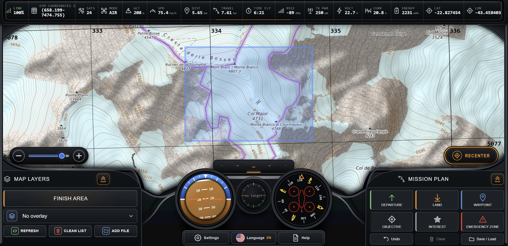
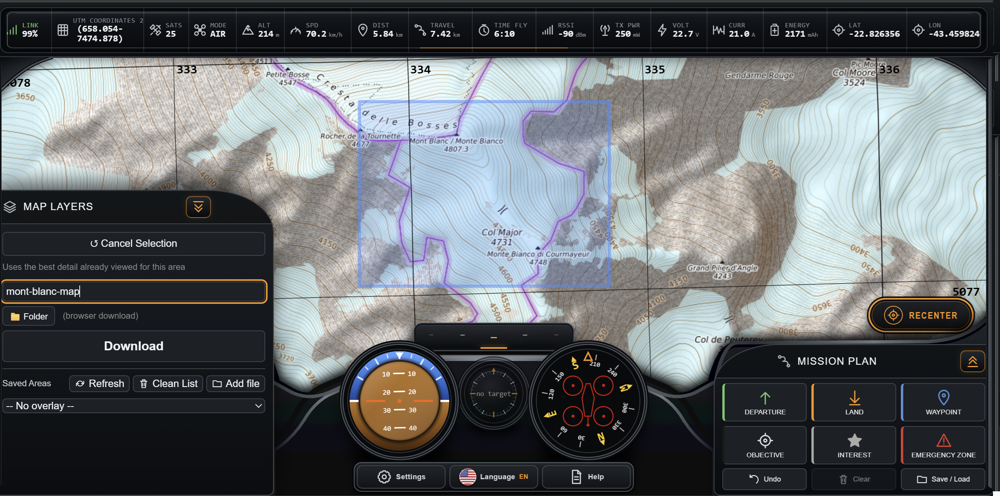
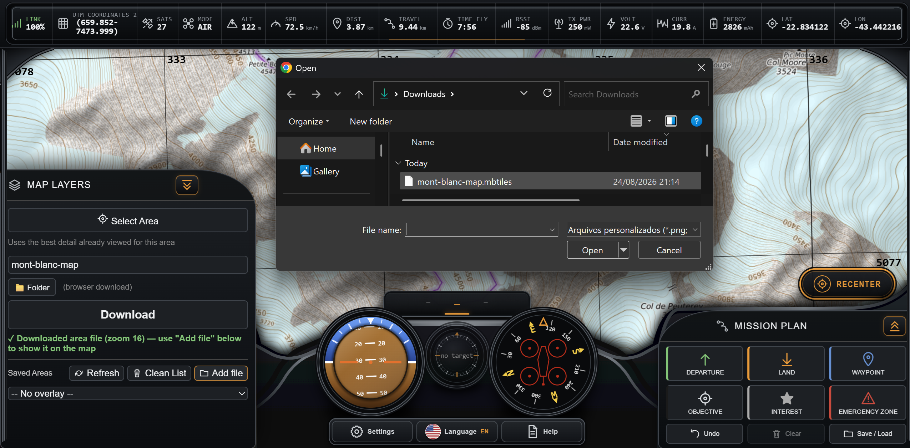
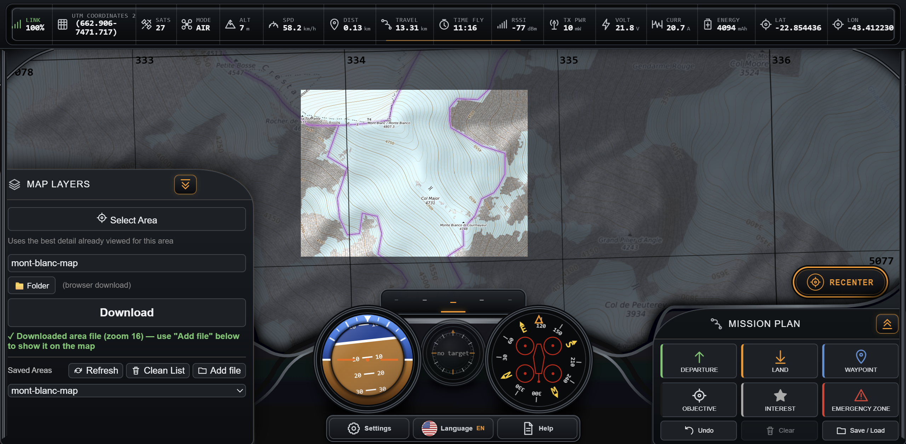
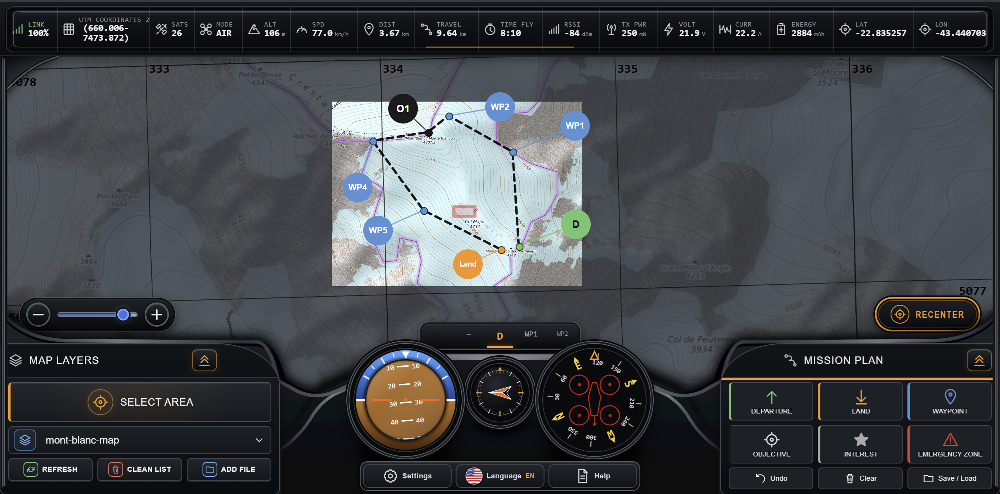
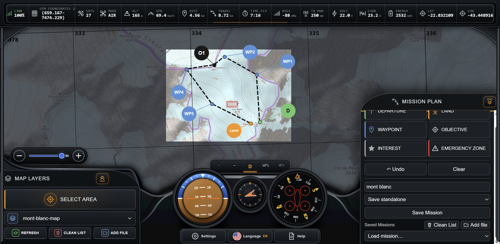

Field awareness
What is MonitorFPV?
MonitorFPV receives telemetry from ExpressLRS-equipped drones and displays useful flight information on a computer or mobile device. It is intended for a ground-support operator assisting an FPV pilot in the field.
It listens to telemetry from the transmitter's ExpressLRS Wi-Fi Backpack and never sends commands or data back to the drone.
Bidirectional MAVLink is a different workflow. MonitorFPV deliberately stays with CRSF telemetry downlink to avoid trading radio-link range and latency for uplink capability.
Requirements
- Drone with an ExpressLRS telemetry link, version 4.1 or newer.
- Compatible transmitter or controller with ELRS Backpack 1.5.8 or newer.
- Windows or macOS computer, or Android or iOS device, with Wi-Fi.
- Internet during map preparation; prepared areas remain available offline.
Connect the transmitter
The normal setup does not require a MonitorFPV-specific change on an ELRS-equipped drone.
Keep the drone setup
If ELRS telemetry already reaches the transmitter, nothing extra is needed on the aircraft.
Enable Backpack telemetry
Use Backpack 1.5.8+. In the ExpressLRS Lua script open Backpack → Telemetry → WiFi and keep CRSF output.
Use 2.4 GHz Wi-Fi
The Backpack cannot join a 5 GHz-only Wi-Fi network. This is unrelated to 5G mobile service.
Optional home network
During flashing, save a 2.4 GHz home or hotspot SSID and password for automatic bench-test connection.
Fallback Backpack network
After about one minute it can create “Backpack ELRS XXXXXX”. Join it with password “expresslrs”. Both devices must share the same Wi-Fi.
Features
- Save selected map areas for later use without internet.
- Create mission plans or import existing INAV missions.
- Monitor link quality, battery, location, speed, attitude and flight status.
- Follow the mission route and waypoint progress from the ground.
Quick start
Install
Download the correct version for your device.
Prepare
Save the operating area and create or import a mission while online.
Connect
Join the ExpressLRS Backpack Wi-Fi network and confirm telemetry.
See official Backpack site
Monitor
Support the FPV pilot with map, telemetry and waypoint awareness.
Picture tutorials
Select any image to inspect it at full size.
Save a map for offline use




Plan and save a mission


Frequently asked questions
Can MonitorFPV control the drone?
No. It only receives CRSF telemetry and has no command uplink to the aircraft.
Do I need to change the drone?
Not if it already uses ExpressLRS and sends telemetry to the transmitter. The additional setup is compatible Backpack firmware and Wi-Fi telemetry enabled on the transmitter.
Does 5 GHz Wi-Fi work?
No. Use a 2.4 GHz Wi-Fi network. “5 GHz Wi-Fi” and “5G mobile service” are different technologies.
Which Wi-Fi network should I join?
Use the 2.4 GHz home or hotspot network saved in the Backpack, or “Backpack ELRS XXXXXX” with password “expresslrs”.
Does MonitorFPV work without internet?
Yes for telemetry and previously saved maps and missions. Internet is needed to prepare new online map areas.